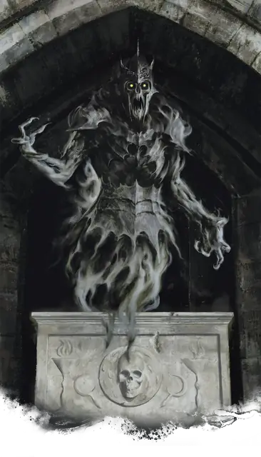

Призрак
Wraith
Средняя или Маленькая Нежить, Нейтральная Злая

Класс Защиты 13 Инициатива +3 (13)
Хиты 67 (9к8 + 27)
Скорость 5 футов, Полёта 60 футов (парит)
| мод | спас | ||
|---|---|---|---|
| СИЛ | 6 | −2 | −2 |
| ЛОВ | 16 | +3 | +3 |
| ТЕЛ | 16 | +3 | +3 |
| мод | спас | ||
|---|---|---|---|
| ИНТ | 12 | +1 | +1 |
| МДР | 14 | +2 | +2 |
| ХАР | 15 | +2 | +2 |
Сопротивление урону Дробящий, Колющий, Рубящий, Кислота, Огонь, Холод
Иммунитеты Некротический, Яд; Бессознательный, Истощение, Окаменевший, Опрокинутый, Опутанный, Отравленный, Очарованный, Парализованный, Схваченный
Чувства Тёмное зрение 60 футов, пассивное Восприятие 12
Языки Общий, плюс два других языка
Опасность 5 (1 800 опыта; БВ +3)
Особенности
Бестелесное перемещение. Призрак может перемещаться через других существ и объекты, как если бы они были Труднопроходимой местностью. Он получает 5 (1к10) Силового урона, если завершает свой ход внутри объекта.
Чувствительность к солнечному свету. Пока призрак находится на солнечном свету, он совершает с Помехой все проверки характеристик и броски атаки.
Действия
Вытягивание жизни. Бросок рукопашной атаки: +6, досягаемость 5 фт. Попадание: 21 (4к8 + 3) Некротического урона. Если цель — существо, её максимум Хитов снижается на число, равное полученному Некротическому урону.
Создание спектра. Призрак выбирает в пределах 10 футов от себя труп Гуманоида, мёртвого не более 1 минуты. Цель восстаёт в качестве Спектра под контролем призрака в пространстве трупа или в ближайшем незанятом пространстве. Под контролем призрака может быть не более семи спектров одновременно.
Бонус мастерства +3
Среда обитания Подземье, Царство теней
Сокровища Отсутствуют
Призрак
Чистая сущность зла
Призраки — зло в чистом виде, воплощение злобы и ужаса, которое жаждет уничтожение всего живого. Они появляются из душ тиранов, мгновений чудовищной боли и актов богопротивного волшебства и приносят с собой ужас и страдания. Погибшие рядом с этим существом Гуманоиды попадают в ловушку его мерзкого естества и воскресают в качестве спектров, навеки скованных зловещей волей призрака.
Призраки таятся в забытых подземельях, проклятых развалинах или землях, находящихся под влиянием мрачных планов бытия. Как правило, в таких местах легко можно найти следы трагедии или скверной магии, которые породили этих созданий.
Призраки могут восстать из одной могущественной злой души или появится под влиянием других несущих гибель сил. Совершите бросок по таблице «Воплощение призрака» для вдохновения или выберите сами зло, которое воплощает призрак.
Воплощение призрака
| 1к10 | Призрак воплощает в себе… |
| 1 | Богопротивную магию проклятого места. |
| 2 | Изгнанное зло раскаявшегося злодея. |
| 3 | Возвращающегося раз в столетие легендарного злодея. |
| 4 | Страх местных жителей перед суеверием или легендой. |
| 5 | Память о трагедии. |
| 6 | Нечестивую идею или зловещую тайну. |
| 7 | Муки одной или нескольких страждущих душ. |
| 8 | Порочность нечестивого Артефакта. |
| 9 | Мерзкие сны спящего бога. |
| 10 | Ненасытное желание Царства Теней, Негативного плана или другого подобного царства поглотить всю жизнь. |